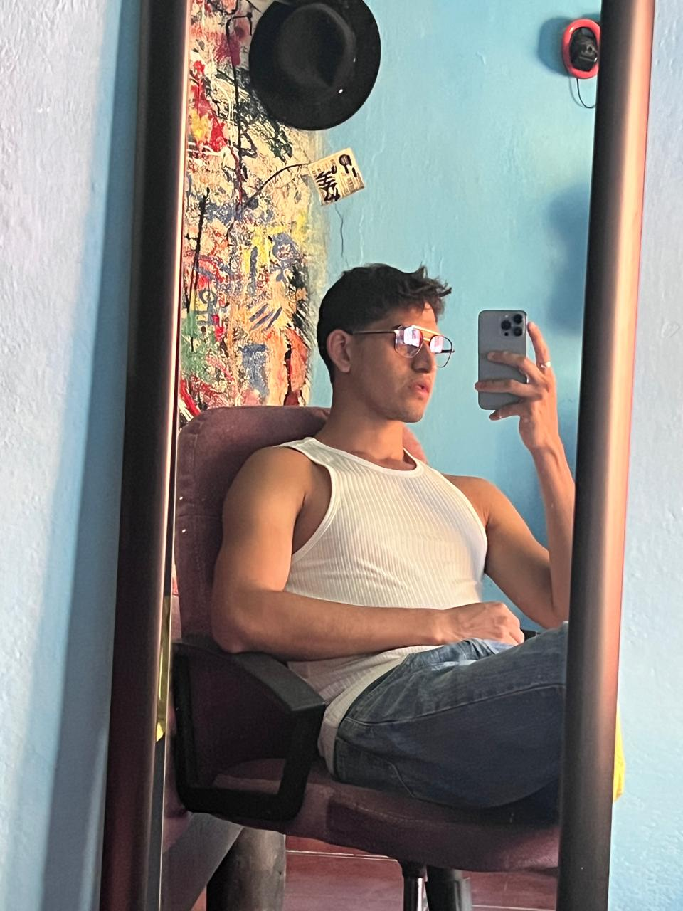

Luis Alejandro Ledesma Gomez
En este pequeño proyecto frozo a mejorar mis habilidades de programación, así como también mi capacidad de trabajo en equipo. Me siento satisfecho con el resultado final y creo que hemos logrado un buen producto.